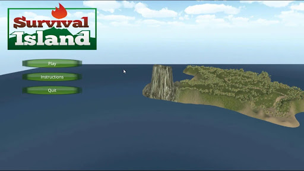
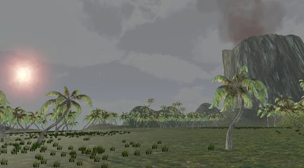
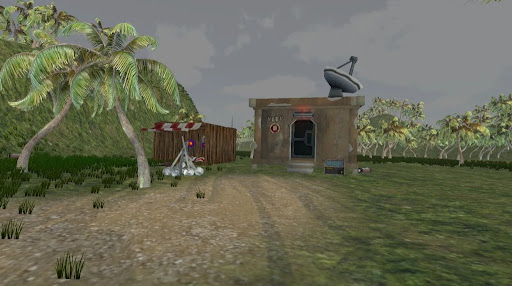
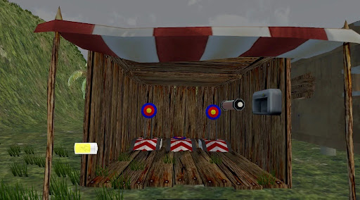
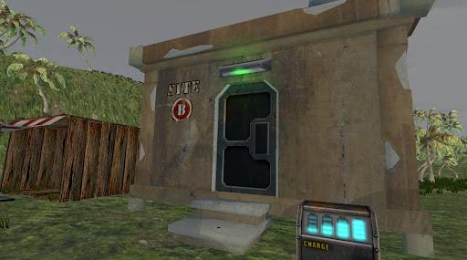
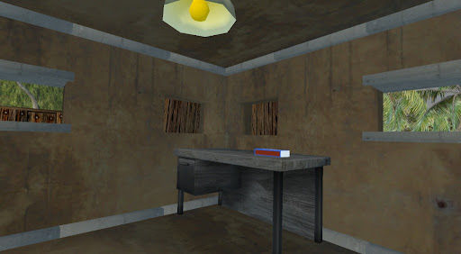
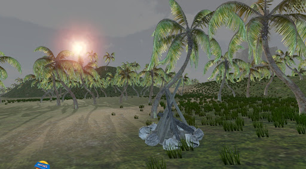
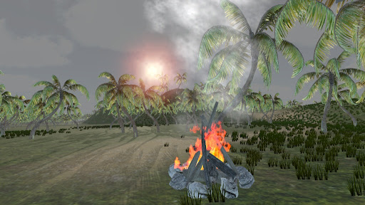
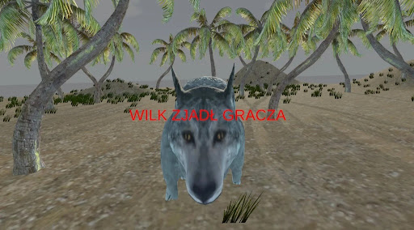

Wyspa Mystery
Survivalowa gra FPS z systemem zagadek logicznych. Eksploruj niebezpieczną wyspę, unikaj drapieżnika i znajdź sposób na wezwanie pomocy przed zapadnięciem zmroku.
Rzut oka na wyspę










Przeżyj noc
lub zgiń próbując
Wyspa Mystery to survivalowa gra FPS stworzona w Unity 3D jako projekt indywidualny. Gracz ląduje na tajemniczej wyspie i musi znaleźć sposób na wezwanie ratunku zanim zapadnie zmrok — eksplorując teren, rozwiązując zagadki i unikając drapieżnika.
Projekt skupia się na budowaniu napięcia atmosferycznego — gęsta mgła, aktywny wulkan i AI wilka tworzą środowisko, w którym każda decyzja ma znaczenie.
Stack technologiczny
Jak to działa
Wilk operuje w trzech stanach: Patrol, Chase i Attack.
Przejście między nimi steruje NavMeshAgent w zależności od odległości i pola widzenia gracza.
if (distToPlayer < chaseRange
&& HasLineOfSight())
state = WolfState.Chase;
else
state = WolfState.Patrol;
Każda klatka kamera rzuca promień w przód. Trafienie w obiekt
z tagiem Interactable wyświetla podpowiedź i wywołuje akcję.
if (Physics.Raycast(
cam.position, cam.forward,
out hit, interactRange))
hit.collider
.GetComponent<IInteractable>()
?.Interact();
Skrypt odlicza 5 sekund i zlicza trafienia w 3 cele.
Po spełnieniu warunku wywołuje animację otwarcia skrzyni przez Animator.
timer -= Time.deltaTime;
if (hitsCount >= 3)
anim.SetTrigger("Open");
else if (timer <= 0)
FailMinigame();
GameManager przechowuje liczbę zebranych artefaktów. Dopiero po zebraniu wszystkich gracz może zapalić ognisko i wygrać grę.
if (artifactsCollected
== totalArtifacts)
campfireInteract
.SetActive(true);
else
ShowHint("Znajdź artefakty");
Mgła skonfigurowana przez Unity URP — gęstość rośnie wraz z odległością. Wulkan emituje ciągły system cząsteczek z dymem i popiołem.
RenderSettings.fog = true; RenderSettings.fogDensity = 0.04f; // Particle System: rate=25/s
Gracz wygrywa zapalając ognisko z zebranymi zapałkami. Przegrywa gdy wilk dotknie go lub gdy minie limit czasu.
void OnTriggerEnter(Collider c) {
if (c.CompareTag("Wolf"))
GameManager.GameOver();
if (c.CompareTag("Campfire")
&& hasMatches)
GameManager.Win();
}